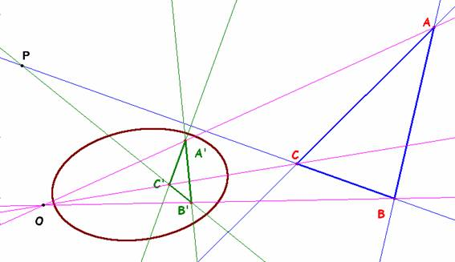
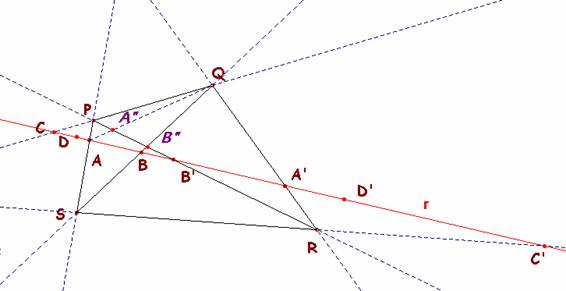
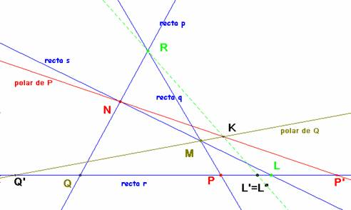
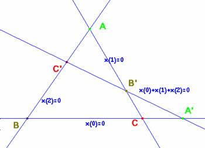

Propuesto por José Carlos Chavez Sandoval, estudiante peruano de Matemática Pura en la Universidad Nacional Mayor de San Marcos.
Problema 315.- Dado un triángulo ABC y una cónica, sea A’B’C’ el triángulo polar de ABC con respecto a la cónica. Demostrar que ABC y A’B’C’ están en perspectiva.
Yiu, P. (2001). Introduction to the Geometry of the Triangle, versión 2.0402, Summer 2001.
Soluciones de Saturnino Campo Ruiz, profesor del IES Fray Luis de León, de Salamanca
La polar de A es la recta a’=B’C’ la polar de B es b’=A’C’ y la de C, c’=A’B’. Sea O el punto de encuentro de las rectas BB’ y CC’, P el de BC y B’C’. En el cuadrilátero que forman estas cuatro rectas, son opuestos los pares (B,C’), (B’,C) y (O,P).

Por construcción los dos primeros son conjugados respecto de la cónica. Vamos a probar que también lo es el tercero. La polar de P es la recta formada con los polos de BC y B’C’: la recta A’A.
De ser cierta la propiedad de los pares opuestos, la polar de P -la recta AA’- ha de pasar por O y habremos concluido la demostración.
(P1) Si dos pares de vértices opuestos de un cuadrilátero completo son conjugados con respecto a cierta cónica, también lo es el otro par.
Para la demostración de (P1) nos basamos en lo siguiente:
a) Teorema del cuadrivértice de Desargues.- Los tres pares de lados opuestos de un cuadrivértice PQRS son cortados por cualquier línea r que no pasa por ningún vértice en tres pares recíprocos de una involución entre puntos de r.
Bastará demostrar, por ejemplo, que (ABB’C’) =(A’B’BC).

En efecto: proyectando la primera desde S sobre PR y posteriormente sobre r desde Q, resultan: (ABB’C’) =(PB”B’R)=(CBB’A’) y en esta última permutando primero y último y los otros dos, (CBB’A’) = (A’B’BC).
b) Toda recta r no tangente a una cónica es base de una involución de puntos conjugados respecto de ella.
Consecuencia inmediata de la definición de polar. El homólogo A’ de un punto A en esta involución se halla cortando la recta r con la recta polar de A. Si la recta y la cónica tienen puntos comunes, éstos son dobles en la involución.
Demostración de (P1)

Supongamos que son conjugados los pares opuestos (P,N) y (Q,M); eso significa que la polar de P pasa por N y la de Q pasa por M: sean éstas NP’ y MQ’ concurrentes en K. Según b) los pares (P,P’) y (Q,Q’) son recíprocos en la involución que la cónica define en r. También lo es (L,L’) donde L’ es el punto donde la polar de L corta a r. Sólo nos queda ver que L’ es la proyección de R desde K.
Considerando ahora el cuadrivértice KMNR, por a) los lados opuestos (RM y KN; NR y MK; NM y RK) son cortados por r en pares de una involución. Estos pares son (P,P’), (Q,Q’) y (L,L”): esta involución es la definida por la cónica (tienen dos pares iguales) y por ello L’=L” y concluimos.
Por su gran sencillez incluimos una demostración analítica de la propiedad (P1). Se basa en elegir un sistema de coordenadas adecuado.

En el cuadrilátero donde son opuestos los vértices (A,A’), (B,B’) y (C,C’) tomamos como sistema de referencia el formado por estas rectas, cuyas ecuaciones son las que aparecen en la gráfica. Sean (x0, x1, x2) las coordenadas proyectivas. En esa referencia las coordenadas de los seis puntos son:
A=l(1,0,0), B=l(0,1,0), C=l(0,0,1), A’=l(0,1,-1), B’=l(1,0,-1) y C’=l(1,-1,0).
Suponemos que (A,A’) y (B,B’) son conjugados respecto de la cónica cuya matriz es
M=.
La relación de conjugación significa M(A, A’) = 0 = M(B, B’).
Haciendo los cálculos oportunos llegamos a .
Para el tercer par se tiene M(C, C’) = = = 0 que significa que también son conjugados como pretendíamos demostrar.